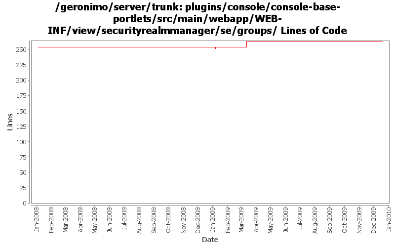

[root]/plugins/console/console-base-portlets/src/main/webapp/WEB-INF/view/securityrealmmanager/se/groups

| Author | Changes | Lines of Code | Lines per Change |
|---|---|---|---|
| Totals | 14 (100.0%) | 33 (100.0%) | 2.3 |
| xuhaihong | 1 (7.1%) | 17 (51.5%) | 17.0 |
| dwoods | 10 (71.4%) | 13 (39.4%) | 1.3 |
| jbohn | 1 (7.1%) | 1 (3.0%) | 1.0 |
| gawor | 1 (7.1%) | 1 (3.0%) | 1.0 |
| djencks | 1 (7.1%) | 1 (3.0%) | 1.0 |
GERONIMO-4965 bundleize console. Remove spliit package, add tomcat test server. Mostly works for me with some uncomitted changes to pluto and our pluto integration
1 lines of code changed in 1 file:
GERONIMO-4517 Apply unified message display style(G-4484) to javascript alert messages. Together with the localization of these messages. Thanks for the patch, Gang Yin
17 lines of code changed in 1 file:
part 4 of more cleanup of old forms (see Rev738104 for part 3)
1 lines of code changed in 1 file:
GERONIMO-4484 Extraction, localization and display of messages generated in portlets. Applied common-message-base.patch and common-message-core.patch from Gang Yin, with some minor updates.
3 lines of code changed in 1 file:
GERONIMO-4025 applied GERONIMO-4025-console.patch from Rex Wang.
6 lines of code changed in 1 file:
GERONIMO-4474 Pull out the text in the JSP files to resource bundle files. Patches provided by Gang Yin.
1 lines of code changed in 1 file:
GERONIMO-4081 Accessibility issues. Applied GERONIMO-4081-console.patch from Ivan.
3 lines of code changed in 1 file:
Fix i18n problems in console. Patch from YunFeng Ma. (GERONIMO-3865)
1 lines of code changed in 1 file:
GERONIMO-1775 Internationalization of the Admin Console. First patch from YunFeng.
0 lines of code changed in 6 files: